Elasticsearch
作者：尚硅谷大海哥
整理：小邹[yw_forgit@163.com]
版本：V1.0
百度：我们比如说想找寻任何的信息的时候，就会上百度去搜索一下，比如说找一部自己喜欢的电影，或者说找一本喜欢的书，或者找一条感兴趣的新闻（提到搜索的第一印象）。百度 != 搜索
1）互联网的搜索：电商网站，招聘网站，新闻网站，各种app
2）IT系统的搜索：OA软件，办公自动化软件，会议管理，日程管理，项目管理。
搜索，就是在任何场景下，找寻你想要的信息，这个时候，会输入一段你要搜索的关键字，然后就期望找到这个关键字相关的有些信息
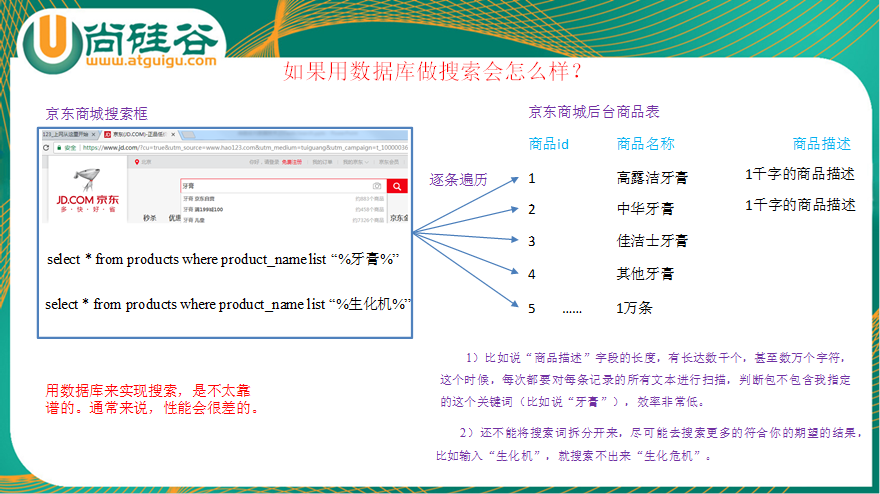
用数据库来实现搜索，是不太靠谱的。通常来说，性能会很差的。
1）全文检索，倒排索引
全文检索是指计算机索引程序通过扫描文章中的每一个词，对每一个词建立一个索引，指明该词在文章中出现的次数和位置，当用户查询时，检索程序就根据事先建立的索引进行查找，并将查找的结果反馈给用户的检索方式。这个过程类似于通过字典中的检索字表查字的过程。全文搜索搜索引擎数据库中的数据。
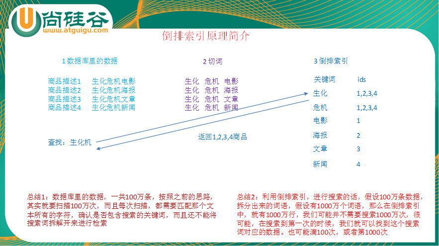
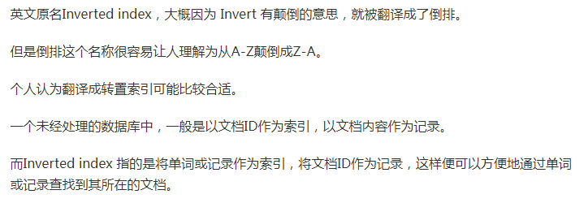
之前hadoop项目
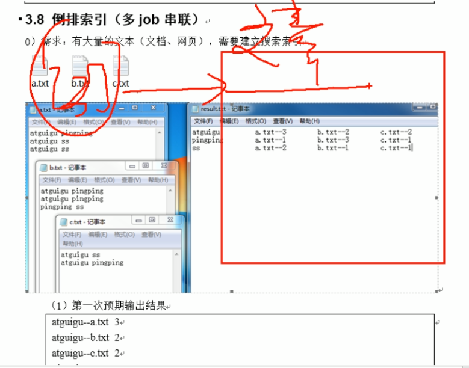
2）lucene，就是一个jar包，里面包含了封装好的各种建立倒排索引，以及进行搜索的代码，包括各种算法。我们就用java开发的时候，引入lucene jar，然后基于lucene的api进行去进行开发就可以了。
Elasticsearch，基于lucene，隐藏复杂性，提供简单易用的restful api接口、java api接口（还有其他语言的api接口）。
关于elasticsearch的一个传说，有一个程序员失业了，陪着自己老婆去英国伦敦学习厨师课程。程序员在失业期间想给老婆写一个菜谱搜索引擎，觉得lucene实在太复杂了，就开发了一个封装了lucene的开源项目，叫compass。后来程序员找到了工作，是做分布式的高性能项目的，觉得compass不够，就写了elasticsearch，让lucene变成分布式的系统。
Elasticsearch是一个实时分布式搜索和分析引擎。它用于全文搜索、结构化搜索、分析。
全文检索：将非结构化数据中的一部分信息提取出来,重新组织,使其变得有一定结构,然后对此有一定结构的数据进行搜索,从而达到搜索相对较快的目的。
结构化检索：我想搜索商品分类为日化用品的商品都有哪些，select *
from products where category_id='日化用品'
数据分析：电商网站，最近7天牙膏这种商品销量排名前10的商家有哪些；新闻网站，最近1个月访问量排名前3的新闻版块是哪些
1）维基百科，类似百度百科，牙膏，牙膏的维基百科，全文检索，高亮，搜索推荐。
2）The Guardian（国外新闻网站），类似搜狐新闻，用户行为日志（点击，浏览，收藏，评论）+ 社交网络数据（对某某新闻的相关看法），数据分析，给到每篇新闻文章的作者，让他知道他的文章的公众反馈（好，坏，热门，垃圾，鄙视，崇拜）。
3）Stack Overflow（国外的程序异常讨论论坛），IT问题，程序的报错，提交上去，有人会跟你讨论和回答，全文检索，搜索相关问题和答案，程序报错了，就会将报错信息粘贴到里面去，搜索有没有对应的答案
4）GitHub（开源代码管理），搜索上千亿行代码。
5）国内：站内搜索（电商，招聘，门户，等等），IT系统搜索（OA，CRM，ERP，等等），数据分析（ES热门的一个使用场景）。
1）可以作为一个大型分布式集群（数百台服务器）技术，处理PB级数据，服务大公司；也可以运行在单机上，服务小公司
2）Elasticsearch不是什么新技术，主要是将全文检索、数据分析以及分布式技术，合并在了一起，才形成了独一无二的ES；lucene（全文检索），商用的数据分析软件（也是有的），分布式数据库（mycat）
3）对用户而言，是开箱即用的，非常简单，作为中小型的应用，直接3分钟部署一下ES，就可以作为生产环境的系统来使用了，数据量不大，操作不是太复杂
4）数据库的功能面对很多领域是不够用的（事务，还有各种联机事务型的操作）；特殊的功能，比如全文检索，同义词处理，相关度排名，复杂数据分析，海量数据的近实时处理；Elasticsearch作为传统数据库的一个补充，提供了数据库所不能提供的很多功能
近实时，两个意思，从写入数据到数据可以被搜索到有一个小延迟（大概1秒）；基于es执行搜索和分析可以达到秒级。
集群包含多个节点，每个节点属于哪个集群是通过一个配置（集群名称，默认是elasticsearch）来决定的，对于中小型应用来说，刚开始一个集群就一个节点很正常
集群中的一个节点，节点也有一个名称（默认是随机分配的），节点名称很重要（在执行运维管理操作的时候），默认节点会去加入一个名称为“elasticsearch”的集群，如果直接启动一堆节点，那么它们会自动组成一个elasticsearch集群，当然一个节点也可以组成一个elasticsearch集群。
索引相当于数据库。
索引包含一堆有相似结构的文档数据，比如可以有一个客户索引，商品分类索引，订单索引，索引有一个名称。一个index包含很多document，一个index就代表了一类类似的或者相同的document。比如说建立一个product index，商品索引，里面可能就存放了所有的商品数据，所有的商品document。
类型相当于表，后面以此类推。
每个索引里都可以有一个或多个type，type是index中的一个逻辑数据分类，一个type下的document，都有相同的field（列），比如博客系统，有一个索引，可以定义用户数据type，博客数据type，评论数据type。
商品index，里面存放了所有的商品数据，商品document
但是商品分很多种类，每个种类的document的field可能不太一样，比如说电器商品，可能还包含一些诸如售后时间范围这样的特殊field；生鲜商品，还包含一些诸如生鲜保质期之类的特殊field
type，日化商品type，电器商品type，生鲜商品type
日化商品type：product_id，product_name，product_desc，category_id，category_name
电器商品type：product_id，product_name，product_desc，category_id，category_name，service_period
生鲜商品type：product_id，product_name，product_desc，category_id，category_name，eat_period
每一个type里面，都会包含一堆document
|
{ "product_id": "1", "product_name": "长虹电视机", "product_desc": "4k高清", "category_id": "3", "category_name": "电器", "service_period": "1年" } |
|
{ "product_id": "2", "product_name": "基围虾", "product_desc": "纯天然，冰岛产", "category_id": "4", "category_name": "生鲜", "eat_period": "7天" } |
文档是es中的最小数据单元，一个document可以是一条客户数据，一条商品分类数据，一条订单数据，通常用JSON数据结构表示，每个index下的type中，都可以去存储多个document。
Field是Elasticsearch的最小单位。一个document里面有多个field，每个field就是一个数据字段。
|
product document { "product_id": "1", "product_name": "高露洁牙膏", "product_desc": "高效美白", "category_id": "2", "category_name": "日化用品" } |
数据如何存放到索引对象上，需要有一个映射配置，包括：数据类型、是否存储、是否分词等。
这样就创建了一个名为blog的Index。Type不用单独创建，在创建Mapping 时指定就可以。Mapping用来定义Document中每个字段的类型，即所使用的 analyzer、是否索引等属性，非常关键等。创建Mapping 的代码示例如下：
|
client.indices.putMapping({ index : 'blog', type : 'article', body : { article: { properties: { id: { type: 'string', analyzer: 'ik', （分析器） store: 'yes', （是否存储） }, title: { type: 'string', analyzer: 'ik', store: 'no', }, content: { type: 'string', analyzer: 'ik', store: 'yes', } } } } }); |
|
关系型数据库（比如Mysql） |
非关系型数据库（Elasticsearch） |
|
数据库Database |
索引Index |
|
表Table |
类型Type |
|
数据行Row |
文档Document |
|
数据列Column |
字段Field |
|
约束 Schema |
映射Mapping |
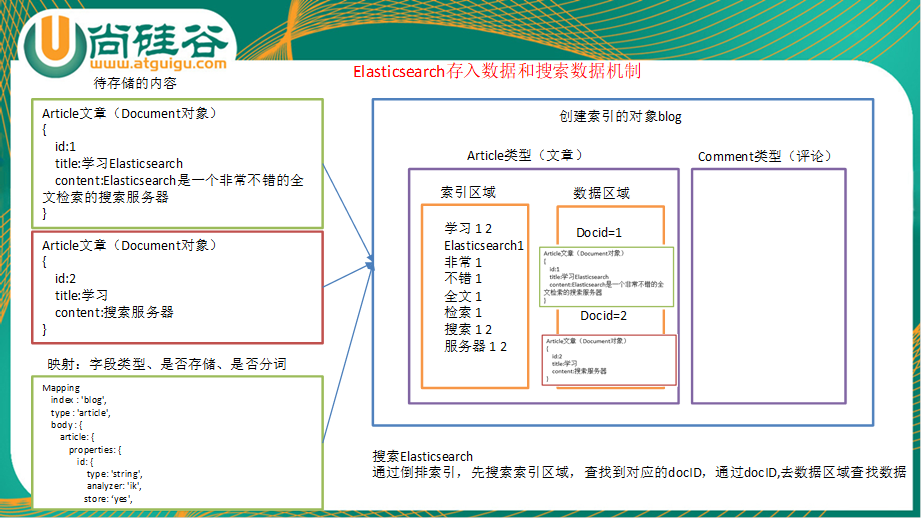
1）索引对象（blog）：存储数据的表结构 ，任何搜索数据，存放在索引对象上 。
2）映射（mapping）：数据如何存放到索引对象上，需要有一个映射配置， 包括：数据类型、是否存储、是否分词等。
3）文档（document）：一条数据记录，存在索引对象上
4）文档类型（type）：一个索引对象，存放多种类型数据，数据用文档类型进行标识
Java必须是1.8以上
1）Elasticsearch官网： https://www.elastic.co/products/elasticsearch
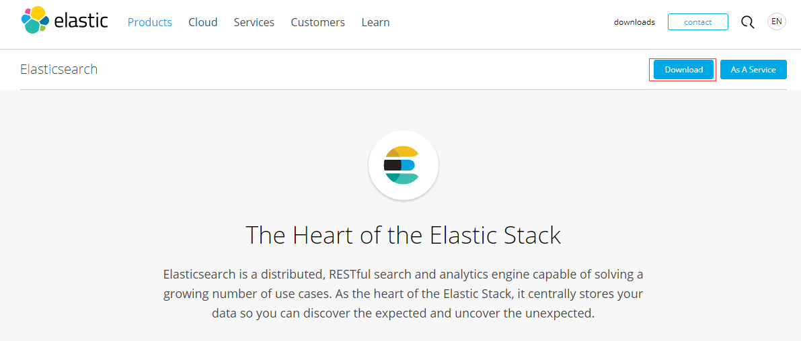
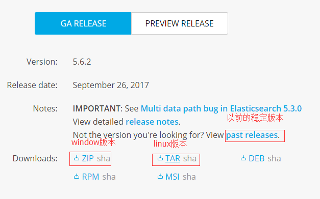
1）解压elasticsearch-5.2.2.tar.gz到/opt/module目录下
[atguigu@hadoop102 software]$ tar -zxvf
elasticsearch-5.2.2.tar.gz -C /opt/module/
2）在/opt/module/elasticsearch-5.2.2路径下创建data和logs文件夹
[atguigu@hadoop102 elasticsearch-5.2.2]$ mkdir
data
[atguigu@hadoop102 elasticsearch-5.2.2]$ mkdir
logs
3）修改配置文件/opt/module/elasticsearch-5.2.2/config/elasticsearch.yml
[atguigu@hadoop102
config]$ pwd
/opt/module/elasticsearch-5.2.2/config
[atguigu@hadoop102
config]$ vi elasticsearch.yml
|
# ---------------------------------- Cluster ----------------------------------- # 后面启动集群的时候就能根据名称自动关联集群（后面用API操作也是根据名称） cluster.name:
my-application # ------------------------------------ Node ------------------------------------ # 节点的名称 node.name: node-102 # ----------------------------------- Paths ------------------------------------ # path词前面不能有空格，:后面必须有空格 path.data:
/opt/module/elasticsearch-5.2.2/data path.logs:
/opt/module/elasticsearch-5.2.2/logs # ----------------------------------- Memory ----------------------------------- # 要设置false，否则后面会报错 bootstrap.memory_lock:
false bootstrap.system_call_filter:
false # ---------------------------------- Network ----------------------------------- # 主机的id地址 network.host:
192.168.1.102 # --------------------------------- Discovery ---------------------------------- # 让别人能访问，默认是localhost；集群就设置多个，逗号隔开；:后面有空格 discovery.zen.ping.unicast.hosts:
["hadoop102"] |
（1）cluster.name
如果要配置集群需要两个节点上的elasticsearch配置的cluster.name相同，都启动可以自动组成集群，这里如果不改cluster.name则默认是cluster.name=my-application，
（2）nodename随意取但是集群内的各节点不能相同
（3）修改后的每行前面不能有空格，修改后的“：”后面必须有一个空格
5）配置linux系统环境（参考：http://blog.csdn.net/satiling/article/details/59697916 ）
（1）切换到root用户，编辑limits.conf 添加类似如下内容
[root@hadoop102
elasticsearch-5.2.2]# vi /etc/security/limits.conf
添加如下内容:
* soft nofile 65536
* hard nofile 131072
* soft nproc 2048
* hard nproc 4096
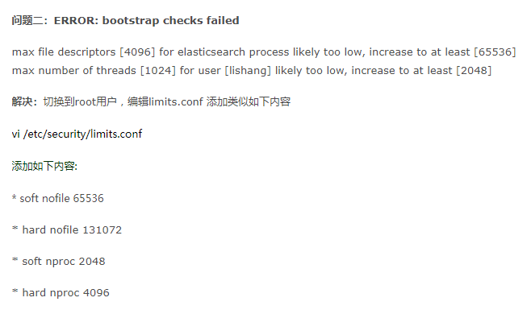
（2）切换到root用户，进入limits.d目录下修改配置文件。
[root@hadoop102
elasticsearch-5.2.2]# vi /etc/security/limits.d/90-nproc.conf
修改如下内容：
* soft nproc 1024
#修改为
* soft nproc 2048
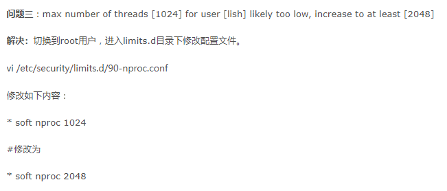
（3）切换到root用户修改配置sysctl.conf
[root@hadoop102
elasticsearch-5.2.2]# vi /etc/sysctl.conf
添加下面配置：
vm.max_map_count=655360
并执行命令：
[root@hadoop102
elasticsearch-5.2.2]# sysctl -p
然后，重新启动elasticsearch，即可启动成功。
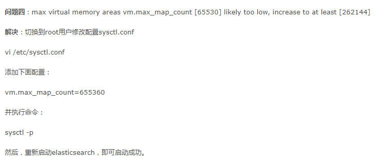
6）启动集群
不能用root用户启动
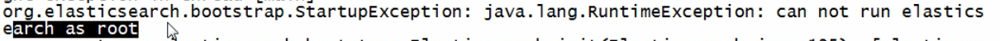
[atguigu@hadoop102 elasticsearch-5.2.2]$
bin/elasticsearch
7）测试集群
|
[atguigu@hadoop102 elasticsearch-5.2.2]$ curl http://hadoop102:9200 { "name" : "node-102", "cluster_name" :
"my-application", "cluster_uuid" :
"v-nwhc7ITsmVHECpNQYzHw", "version" : { "number" : "5.2.2", "build_hash" :
"57e20f3", "build_date" :
"2017-09-23T13:16:45.703Z", "build_snapshot" : false, "lucene_version" :
"6.6.1" }, "tagline" : "You Know, for
Search" } |
访问
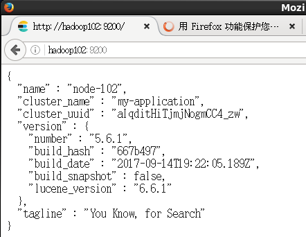
8）停止集群
kill -9 进程号
略
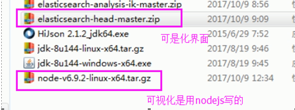
1）下载插件
https://github.com/mobz/elasticsearch-head
elasticsearch-head-master.zip
2）nodejs官网下载安装包
node-v6.9.2-linux-x64.tar.xz
3）将elasticsearch-head-master.zip和node-v6.9.2-linux-x64.tar.xz都导入到linux的/opt/software目录。
4）安装nodejs
[atguigu@hadoop102 software]$ tar -zxvf
node-v6.9.2-linux-x64.tar.gz -C /opt/module/
5）配置nodejs环境变量
[root@hadoop102
software]# vi /etc/profile
export NODE_HOME=/opt/module/node-v6.9.2-linux-x64
export PATH=$PATH:$NODE_HOME/bin
[root@hadoop102 software]# source /etc/profile
6）查看node和npm版本（有版本说明安装成功）
[root@hadoop102
software]# node -v
v6.9.2
[root@hadoop102
software]# npm -v
3.10.9
7）解压head插件到/opt/module目录下
[atguigu@hadoop102 software]$ unzip
elasticsearch-head-master.zip -d /opt/module/
8）查看当前head插件目录下有无node_modules/grunt目录：
没有就执行命令创建：（会下载东西）
[atguigu@hadoop102 elasticsearch-head-master]$
npm install grunt --save
9）安装head插件：
[atguigu@hadoop102 elasticsearch-head-master]$
npm install -g cnpm --registry=https://registry.npm.taobao.org
10）安装grunt：
[atguigu@hadoop102 elasticsearch-head-master]$
npm install -g grunt-cli
11）编辑Gruntfile.js
[atguigu@hadoop102 elasticsearch-head-master]$
vim Gruntfile.js
文件93行添加hostname:'0.0.0.0'
options: {
hostname:'0.0.0.0',
port: 9100,
base: '.',
keepalive: true
}
12）检查head根目录下是否存在base文件夹
没有就将 _site下的base文件夹及其内容复制到head根目录下
[atguigu@hadoop102 elasticsearch-head-master]$
mkdir base
[atguigu@hadoop102 _site]$ cp base/* ../base/
13）启动grunt server：（-d是后台运行）
[atguigu@hadoop102
elasticsearch-head-master]$ grunt server -d
Running
"connect:server" (connect) task
[D] Task source:
/opt/module/elasticsearch-head-master/node_modules/grunt-contrib-connect/tasks/connect.js
Waiting forever...
Started connect web
server on http://localhost:9100
如果提示grunt的模块没有安装：
Local Npm module “grunt-contrib-clean” not found. Is it installed?
Local Npm module “grunt-contrib-concat” not found. Is it installed?
Local Npm module “grunt-contrib-watch” not found. Is it installed?
Local Npm module “grunt-contrib-connect” not found. Is it installed?
Local Npm module “grunt-contrib-copy” not found. Is it installed?
Local Npm module “grunt-contrib-jasmine” not found. Is it installed?
Warning: Task “connect:server” not found. Use –force to continue.
执行以下命令：
npm install
grunt-contrib-clean -registry=https://registry.npm.taobao.org
npm install
grunt-contrib-concat -registry=https://registry.npm.taobao.org
npm install
grunt-contrib-watch -registry=https://registry.npm.taobao.org
npm install
grunt-contrib-connect -registry=https://registry.npm.taobao.org
npm install
grunt-contrib-copy -registry=https://registry.npm.taobao.org
npm install
grunt-contrib-jasmine -registry=https://registry.npm.taobao.org （这个会一直等着）
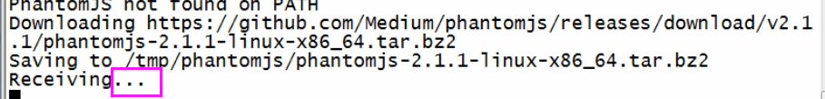
最后一个模块可能安装不成功，但是不影响使用。
安装完重新启动
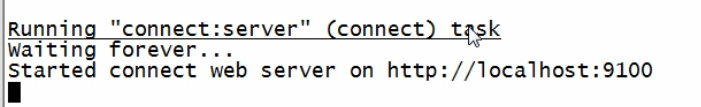
14）浏览器访问head插件：
15）启动集群插件后发现集群未连接
在/opt/module/elasticsearch-5.2.2/config路径下修改配置文件elasticsearch.yml，在文件末尾增加
[atguigu@hadoop102
config]$ pwd
/opt/module/elasticsearch-5.2.2/config
[atguigu@hadoop102
config]$ vi elasticsearch.yml
（允许跨域）
http.cors.enabled:
true
http.cors.allow-origin:
"*"
再重新启动elasticsearch、重启插件
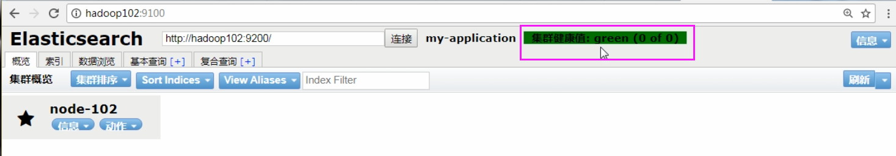
16）关闭插件服务
ctrl+c
[atguigu@hadoop102
elasticsearch-head-master]$ netstat -lntp | grep 9100
tcp 0 0 192.168.1.102:9100 0.0.0.0:* LISTEN 6070/grunt
Elasticsearch的Java客户端非常强大；它可以建立一个嵌入式实例并在必要时运行管理任务。
运行一个Java应用程序和Elasticsearch时，有两种操作模式可供使用。该应用程序可在Elasticsearch集群中扮演更加主动或更加被动的角色。在更加主动的情况下（称为Node Client），应用程序实例将从集群接收请求，确定哪个节点应处理该请求，就像正常节点所做的一样。（应用程序甚至可以托管索引和处理请求。）另一种模式称为Transport Client，它将所有请求都转发到另一个Elasticsearch节点，由后者来确定最终目标。
1）创建maven工程
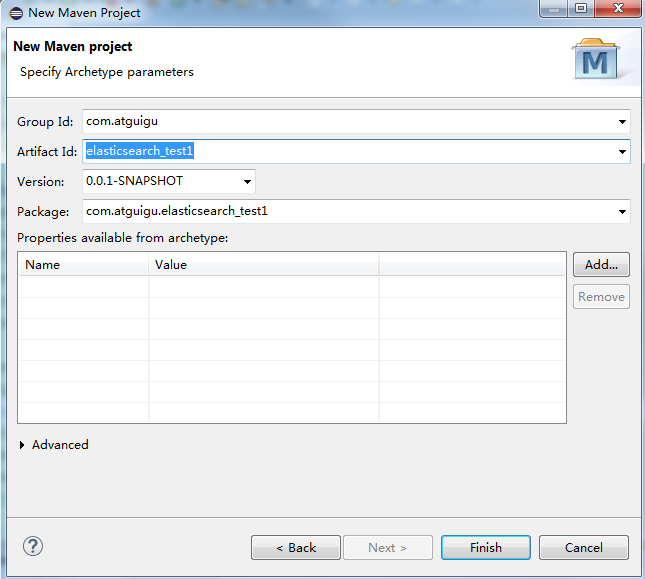
2）添加pom文件
|
<dependencies> <dependency> <groupId>junit</groupId> <artifactId>junit</artifactId> <version>3.8.1</version> <scope>test</scope> </dependency> <dependency> <groupId>org.elasticsearch</groupId> <artifactId>elasticsearch</artifactId> <version>5.2.2</version> </dependency> <dependency> <groupId>org.elasticsearch.client</groupId> <artifactId>transport</artifactId> <version>5.2.2</version> </dependency> <dependency> <groupId>org.apache.logging.log4j</groupId> <artifactId>log4j-core</artifactId> <version>2.9.0</version> </dependency> </dependencies> |
3）等待依赖的jar包下载完成
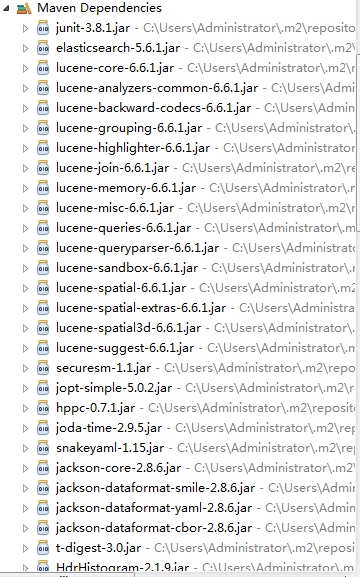
当直接在ElasticSearch 建立文档对象时，如果索引不存在的，默认会自动创建，映射采用默认方式
（1）ElasticSearch服务默认端口9300。
（2）Web管理平台端口9200。
|
private TransportClient client; @SuppressWarnings("unchecked") @Before public void getClient() throws Exception
{ // 1 设置连接的集群名称（客户端连接的哪个集群） Settings settings = Settings.builder().put("cluster.name",
"my-application").build(); // 2 连接集群 client = new
PreBuiltTransportClient(settings);
// hadoop102就是要连接的主机名，JavaAPI访问是用9300，http访问是9200 client.addTransportAddress(new
InetSocketTransportAddress(InetAddress.getByName("hadoop102"),
9300)); // 3 打印集群名称 System.out.println(client.toString()); } |
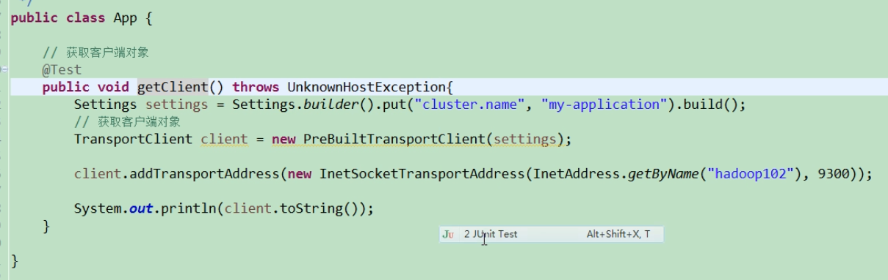
注意
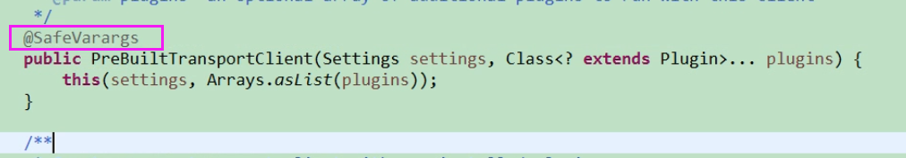
参数可变的注解
1）源代码
|
@Test public void createIndex_blog(){ // 1 创建索引（client是前面获取到的），索引名称blog2 client.admin().indices().prepareCreate("blog2").get();
// 2 关闭连接 client.close(); } |
2）查看结果
黄色部分是5个切片，而10是每个切片都一个副本，黄色是警告，因为只有一个机器。
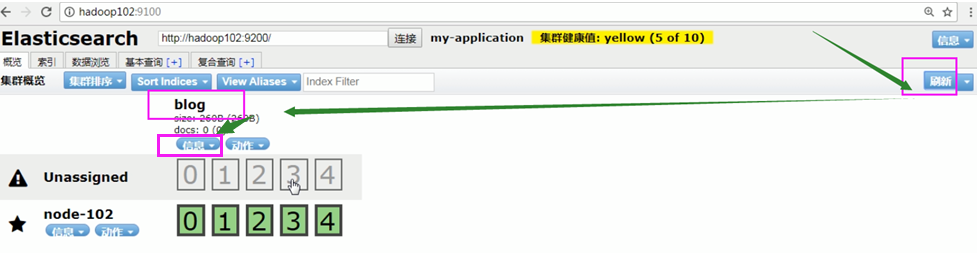
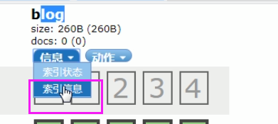
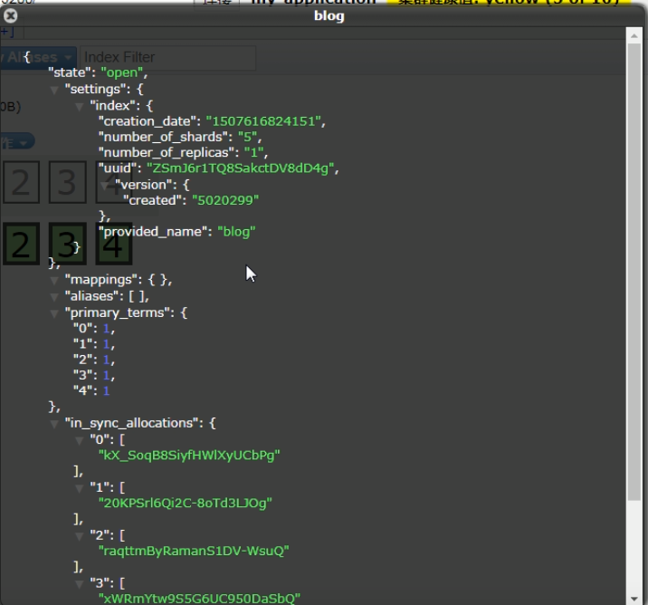
1）源代码
|
@Test public void deleteIndex(){ // 1 删除索引 client.admin().indices().prepareDelete("blog2").get();
// 2 关闭连接 client.close(); } |
2）查看结果
浏览器查看http://hadoop102:9200/blog2
没有blog2索引了。
当直接在ElasticSearch建立文档对象时，如果索引不存在的，默认会自动创建，映射采用默认方式。
ElasticSearch服务默认端口9300
Web管理平台端口9200
1）源代码
|
@Test public void createIndexByJson() throws UnknownHostException { // 1 文档数据准备 String json = "{" + "\"id\":\"1\"," + "\"title\":\"基于Lucene的搜索服务器\"," + "\"content\":\"它提供了一个分布式多用户能力的全文搜索引擎，基于RESTful web接口\"" + "}"; 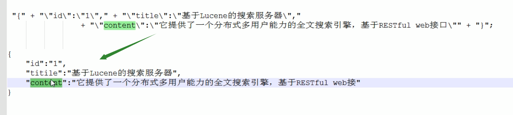 // 2 创建文档。"blog", "article", "1"分别是索引、类型、id IndexResponse indexResponse = client.prepareIndex("blog", "article", "1").setSource(json).execute().actionGet(); // 3 打印返回的结果 System.out.println("索引:" + indexResponse.getIndex()); System.out.println("类型:" + indexResponse.getType()); System.out.println("id:" + indexResponse.getId()); System.out.println("版本号:" + indexResponse.getVersion()); System.out.println("结果" + indexResponse.getResult()); // 4 关闭连接 client.close(); } |
2）结果查看
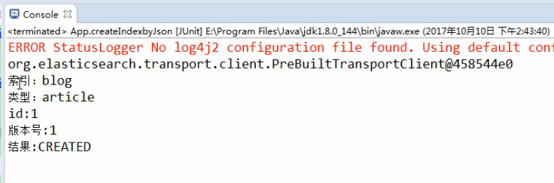
可视化看
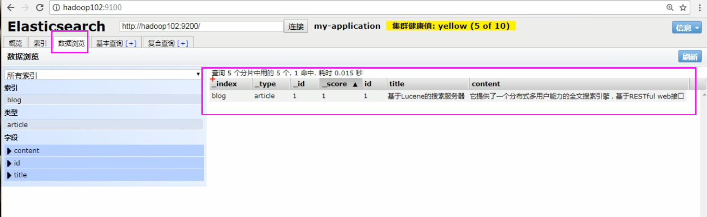
1）源代码
|
@Test public void createIndexByMap() { // 1 文档数据准备（Map） Map<String, Object> json = new HashMap<String, Object>(); json.put("id", "2"); json.put("title", "基于Lucene的搜索服务器"); json.put("content", "它提供了一个分布式多用户能力的全文搜索引擎，基于RESTful web接口"); // 2 创建文档 IndexResponse indexResponse = client.prepareIndex("blog", "article", "2").setSource(json).execute().actionGet(); // 3 打印返回的结果 System.out.println("索引:" + indexResponse.getIndex()); System.out.println("类型:" + indexResponse.getType()); System.out.println("id:" + indexResponse.getId()); System.out.println("版本号:" + indexResponse.getVersion()); System.out.println("结果" + indexResponse.getResult()); // 4 关闭连接 client.close(); } |
2）结果查看
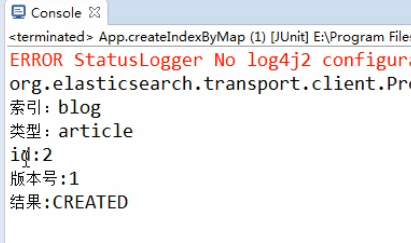
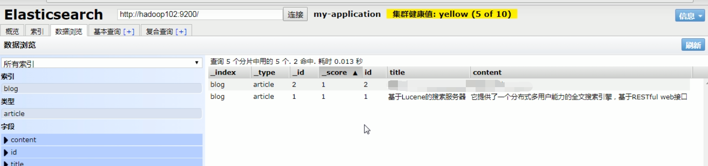
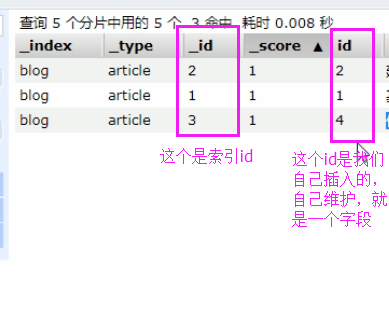
1）源代码
|
@Test public void createIndex() throws Exception { // 1 通过es自带的帮助类，构建json数据（类似于解析xml） XContentBuilder builder = XContentFactory.jsonBuilder().startObject() .field("id", 3) .field("title", "基于Lucene的搜索服务器") .field("content", "它提供了一个分布式多用户能力的全文搜索引擎，基于RESTful web接口。") .endObject(); // 2 创建文档 IndexResponse indexResponse = client.prepareIndex("blog", "article", "3").setSource(builder).get(); // 3 打印返回的结果 System.out.println("index:" + indexResponse.getIndex()); System.out.println("type:" + indexResponse.getType()); System.out.println("id:" + indexResponse.getId()); System.out.println("version:" + indexResponse.getVersion()); System.out.println("result:" + indexResponse.getResult()); // 4 关闭连接 client.close(); } |
2）结果查看
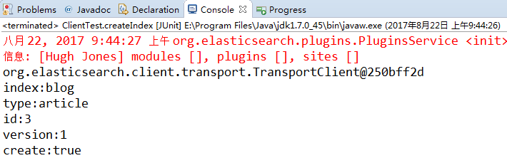
1）源代码
|
@Test public void getData() throws Exception {
// 1 查询文档 GetResponse response = client.prepareGet("blog", "article", "1").get();
// 2 打印搜索的结果 System.out.println(response.getSourceAsString());
// 3 关闭连接 client.close(); } |
2）结果查看
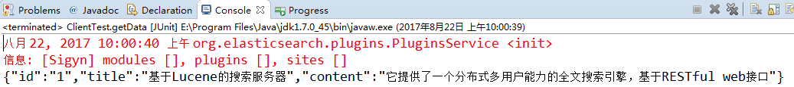
1）源代码
|
@Test public void getMultiData() {
// 1 查询多个文档 MultiGetResponse response = client.prepareMultiGet() .add("blog", "article", "1") .add("blog", "article", "2", "3") // 可多个id .add("blog", "article", "2").get();
// 2 遍历返回的结果 for(MultiGetItemResponse itemResponse:response){ GetResponse getResponse = itemResponse.getResponse();
// 如果获取到查询结果 if (getResponse.isExists()) { String sourceAsString = getResponse.getSourceAsString(); System.out.println(sourceAsString); } }
// 3 关闭资源 client.close(); } |
2）结果查看
{"id":"1","title":"基于Lucene的搜索服务器","content":"它提供了一个分布式多用户能力的全文搜索引擎，基于RESTful web接口"}
{"content":"它提供了一个分布式多用户能力的全文搜索引擎，基于RESTful web接口","id":"2","title":"基于Lucene的搜索服务器"}
{"id":3,"titile":"ElasticSearch是一个基于Lucene的搜索服务器","content":"它提供了一个分布式多用户能力的全文搜索引擎，基于RESTful web接口。"}
{"content":"它提供了一个分布式多用户能力的全文搜索引擎，基于RESTful web接口","id":"2","title":"基于Lucene的搜索服务器"}
1）源代码
|
@Test public void updateData() throws Throwable { // 1 创建更新数据的请求对象 UpdateRequest updateRequest = new UpdateRequest(); updateRequest.index("blog"); updateRequest.type("article"); updateRequest.id("3"); // 修改为这内容（如果这里没有设置，则update方法就不会做更改，只是查询） updateRequest.doc(XContentFactory.jsonBuilder().startObject() // 对没有的字段添加, 对已有的字段替换 .field("title", "基于Lucene的搜索服务器") .field("content", "它提供了一个分布式多用户能力的全文搜索引擎，基于RESTful web接口。大数据前景无限") .field("createDate", "2017-8-22").endObject()); // 2 获取更新后的值 UpdateResponse indexResponse = client.update(updateRequest).get();
// 3 打印返回的结果 System.out.println("index:" + indexResponse.getIndex()); System.out.println("type:" + indexResponse.getType()); System.out.println("id:" + indexResponse.getId()); System.out.println("version:" + indexResponse.getVersion()); System.out.println("create:" + indexResponse.getResult()); // 4 关闭连接 client.close(); } |
2）结果查看
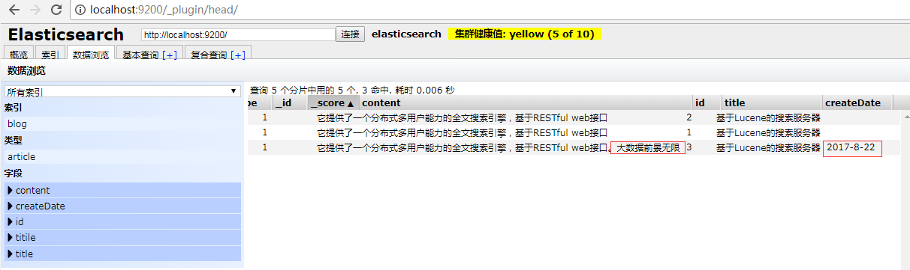
设置查询条件, 查找不到则添加indexRequest内容，查找到则按照upsert更新。
|
@Test public void testUpsert() throws Exception { // 设置查询条件, 查找不到则添加（没有这个文档就创建） IndexRequest indexRequest = new IndexRequest("blog", "article", "5") .source(XContentFactory.jsonBuilder().startObject().field("title", "搜索服务器") .field("content","它提供了一个分布式多用户能力的全文搜索引擎，基于RESTful web接口。Elasticsearch是用Java开发的，并作为Apache许可条款下的开放源码发布，是当前流行的企业级搜索引擎。设计用于云计算中，能够达到实时搜索，稳定，可靠，快速，安装使用方便。") .endObject());
// 设置更新, 查找到更新下面的设置（有文档内容就更新） UpdateRequest upsert = new UpdateRequest("blog", "article", "5") .doc(XContentFactory.jsonBuilder().startObject().field("user", "李四").endObject()).upsert(indexRequest); client.update(upsert).get(); client.close(); } |
第一次执行
hadoop102:9200/blog/article/5（创建）
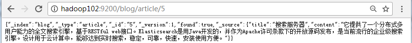
第二次执行
hadoop102:9200/blog/article/5（更新）
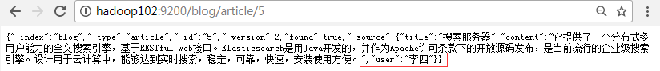
1）源代码
|
@Test public void deleteData() {
// 1 删除文档数据 DeleteResponse indexResponse = client.prepareDelete("blog", "article", "5").get(); // 2 打印返回的结果 System.out.println("index:" + indexResponse.getIndex()); System.out.println("type:" + indexResponse.getType()); System.out.println("id:" + indexResponse.getId()); System.out.println("version:" + indexResponse.getVersion()); System.out.println("found:" + indexResponse.getResult()); // 3 关闭连接 client.close(); } |
2）结果查看
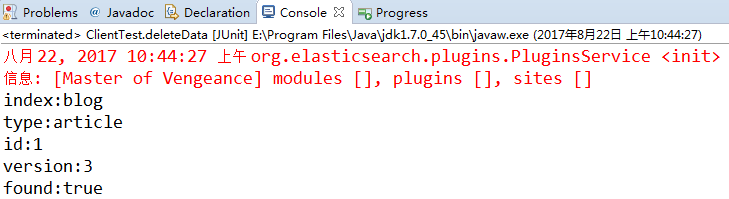
1）源代码
|
@Test public void matchAllQuery() {
// 1 执行查询（QueryBuilders.matchAllQuery()查询所有） SearchResponse searchResponse = client.prepareSearch("blog").setTypes("article") .setQuery(QueryBuilders.matchAllQuery()).get(); // 2 打印查询结果 SearchHits hits = searchResponse.getHits(); // 获取命中次数，查询结果有多少对象 System.out.println("查询结果有：" + hits.getTotalHits() + "条"); Iterator<SearchHit> iterator = hits.iterator(); while (iterator.hasNext()) { SearchHit searchHit = iterator.next(); // 每个查询对象 System.out.println(searchHit.getSourceAsString()); // 获取字符串格式打印 } // 3 关闭连接 client.close(); } |
2）结果查看
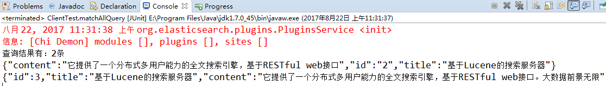
1）源代码
|
@Test public void query() { // 1 条件查询（"全文"表示全字能查到的、文字能查到的都返回，是把一个个字做索引，但是只要符合一个索引的都拿过来） SearchResponse searchResponse = client.prepareSearch("blog").setTypes("article") .setQuery(QueryBuilders.queryStringQuery("全文")).get(); // 2 打印查询结果 SearchHits hits = searchResponse.getHits(); // 获取命中次数，查询结果有多少对象 System.out.println("查询结果有：" + hits.getTotalHits() + "条");
Iterator<SearchHit> iterator = hits.iterator();
while (iterator.hasNext()) { SearchHit searchHit = iterator.next(); // 每个查询对象
System.out.println(searchHit.getSourceAsString()); // 获取字符串格式打印 }
// 3 关闭连接 client.close(); } |
2）结果查看
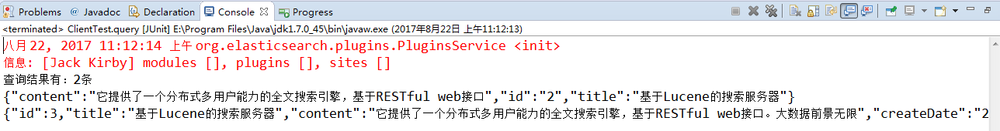
*：表示多个字符（任意的字符）
？：表示单个字符
1）源代码
|
@Test public void wildcardQuery() { // 1 通配符查询 SearchResponse searchResponse = client.prepareSearch("blog").setTypes("article") .setQuery(QueryBuilders.wildcardQuery("content", "*全*")).get(); // 2 打印查询结果 SearchHits hits = searchResponse.getHits(); // 获取命中次数，查询结果有多少对象 System.out.println("查询结果有：" + hits.getTotalHits() + "条"); Iterator<SearchHit> iterator = hits.iterator(); while (iterator.hasNext()) { SearchHit searchHit = iterator.next(); // 每个查询对象 System.out.println(searchHit.getSourceAsString()); // 获取字符串格式打印 } // 3 关闭连接 client.close(); } |
2）结果查看
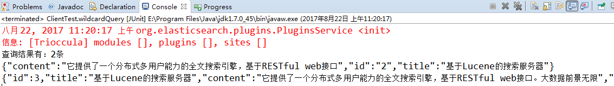
1）源代码
|
@Test public void termQuery() {
// 1 第一field查询（"content", "全"表示content字段中有全字的，注意这是对一个个字做索引，如果有改为“全文”则无结果，因为没有该“全文”索引，用ik的方式才会对每个词做索引） SearchResponse searchResponse = client.prepareSearch("blog").setTypes("article") .setQuery(QueryBuilders.termQuery("content", "全")).get();
// 2 打印查询结果 SearchHits hits = searchResponse.getHits(); // 获取命中次数，查询结果有多少对象 System.out.println("查询结果有：" + hits.getTotalHits() + "条"); Iterator<SearchHit> iterator = hits.iterator(); while (iterator.hasNext()) { SearchHit searchHit = iterator.next(); // 每个查询对象 System.out.println(searchHit.getSourceAsString()); // 获取字符串格式打印 } // 3 关闭连接 client.close(); } |
2）结果查看
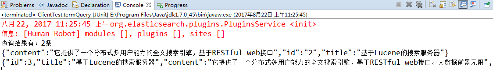
强大
|
@Test public void fuzzy() {
// 1 模糊查询 SearchResponse searchResponse = client.prepareSearch("blog").setTypes("article") .setQuery(QueryBuilders.fuzzyQuery("title", "lucene")).get();
// 2 打印查询结果 SearchHits hits = searchResponse.getHits(); // 获取命中次数，查询结果有多少对象 System.out.println("查询结果有：" + hits.getTotalHits() + "条"); Iterator<SearchHit> iterator = hits.iterator(); while (iterator.hasNext()) { SearchHit searchHit = iterator.next(); // 每个查询对象 System.out.println(searchHit.getSourceAsString()); // 获取字符串格式打印 } // 3 关闭连接 client.close(); } |
本来是大写，查询用了小写，也能查询，查询lucen也是能查询的，luce就不行了，错的太离谱了。
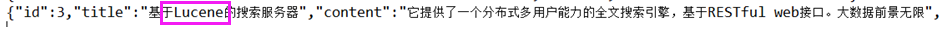
也就是建表过程的限制条件。
1）源代码
|
@Test public void createMapping() throws Exception {
// 1设置mapping（如果已经有了mapping就不能创建了，删除重建。而且索引要先创建，才能建立mapping） XContentBuilder builder = XContentFactory.jsonBuilder() .startObject() .startObject("article") .startObject("properties") .startObject("id1") .field("type", "string") .field("store", "yes") .endObject() .startObject("title2") .field("type", "string") .field("store", "no") .endObject() .startObject("content") .field("type", "string") .field("store", "yes") .endObject() .endObject() .endObject() .endObject(); // 2 添加mapping PutMappingRequest mapping = Requests.putMappingRequest("blog4").type("article").source(builder);
client.admin().indices().putMapping(mapping).get();
// 3 关闭资源 client.close(); } |
2）查看结果
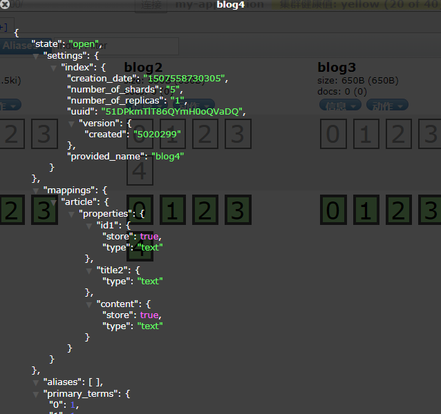